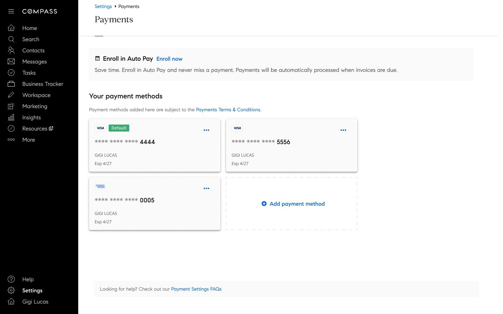
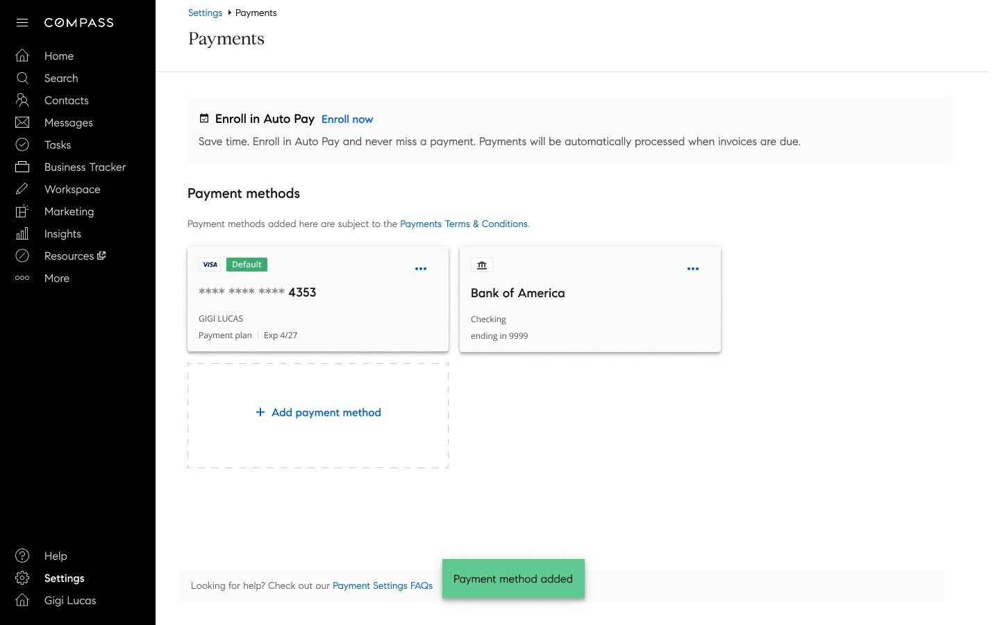
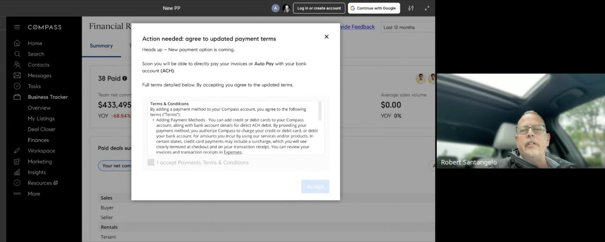
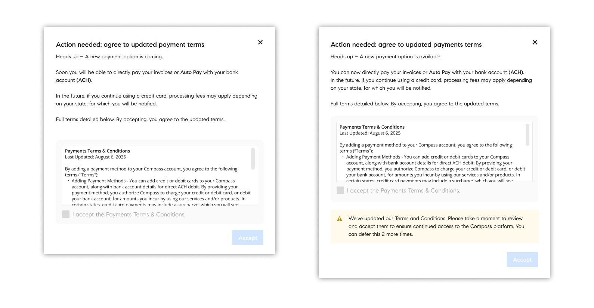
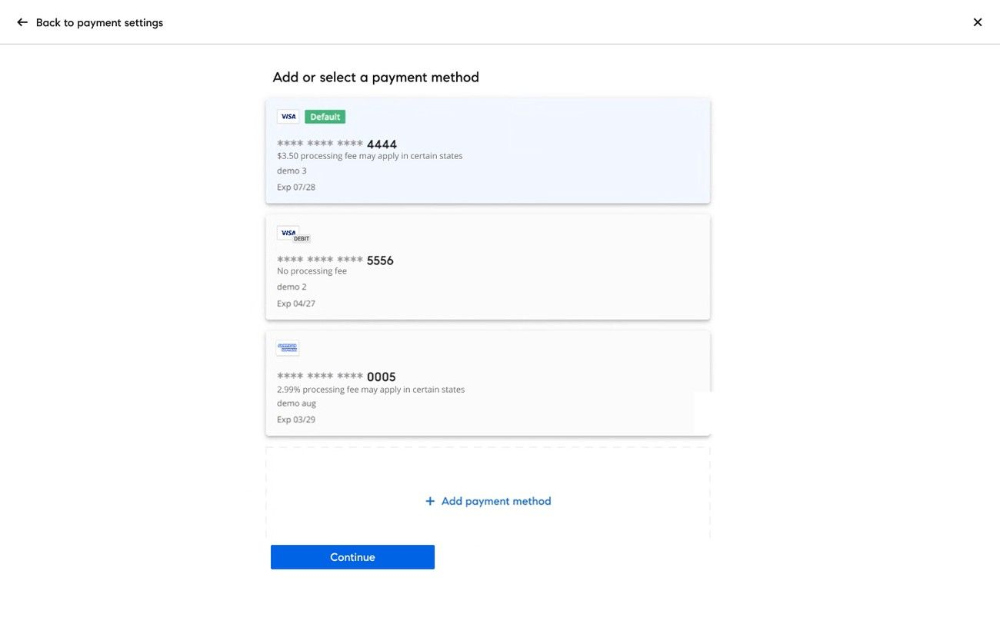
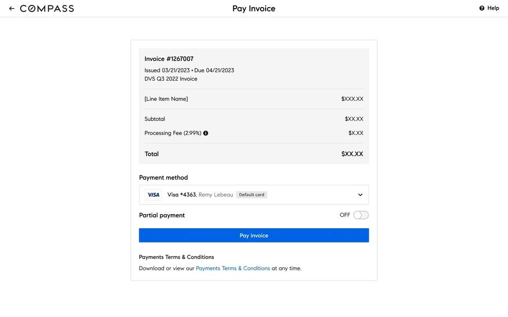
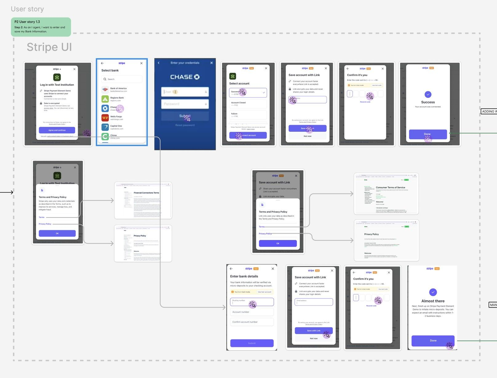
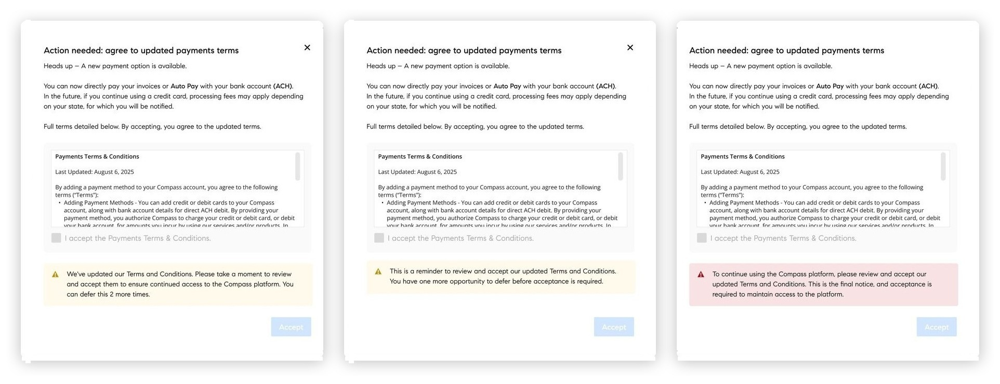
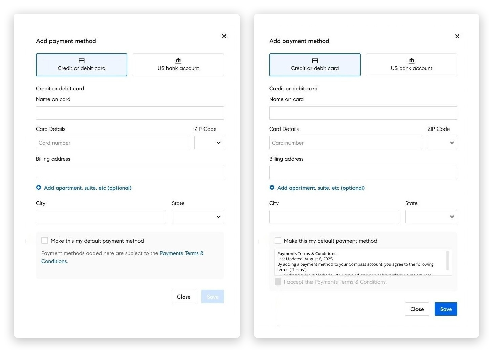

Payments · Compass
Designing payment flows projected to save $1M
An agent-only ACH and surcharge initiative that gave agents a genuine, transparent choice before shifting credit card processing costs off the company, aligned across product, engineering, and compliance in eight weeks.

The final flow: a flat $1 ACH alternative alongside the 2.99% card surcharge.
The problem
Compass had no mechanism for passing credit card processing fees to agents and no alternative payment method. Every credit card transaction came at a direct cost to the company, quietly adding up across thousands of invoices. No ACH option. No surcharge disclosure. No way for agents to make a lower-cost choice, because that choice didn't exist yet.
Credit card processing costs Compass roughly $1.1M annually, a direct cost with no offset and no alternative payment path.
Credit and debit cards were the only payment method for invoices and commission deductions, which also capped what the platform could support next: calling and texting, Compass coaching, digital advertising, and other features that would need payment flexibility.
Recurring payments depended on cards staying valid over the long term, with no reliable way to keep an agent's payment method current before it lapsed.

Before: cards only, no bank account option.

After: a bank account added right alongside the card.
Discovery: the fee wasn't the problem
Before designing the flow, I ran concept testing with 10 agents using early modal prototypes, not to validate the UI, but to pressure-test the message. The goal was to understand how agents would react to a new fee and an unfamiliar payment method before either went live.
I also ran agents through the actual Stripe bank-linking experience directly, to make sure the flow itself felt familiar rather than like an unfamiliar third party asking for their bank details.
“Agents didn't object to the fee as much as they objected to feeling like it was being hidden from them.”
Transparency and timing mattered more than the dollar amount.

A live session, watching an agent react to the updated payment terms modal in real time.
Strategy: lead with the choice, not the charge
That insight shaped a three-phase rollout rather than a single launch. Phase 1 simply let agents know a new payment method was coming, in a modal they were free to dismiss. Phase 2 kept that same no-pressure dismissible modal but made ACH real: agents could add a bank account whenever they were ready, well before any cost was involved. Phase 3 introduced the credit card surcharge itself, at which point every saved card carried a clear processing-fee disclosure right where agents chose how to pay, so the cost was never a surprise at the moment it mattered. Agents weren't blindsided at any step; they had a genuine, lower-cost alternative already in place by the time the fee arrived. I aligned product, engineering, and compliance around this sequencing inside an eight-week window, designing within legal disclosure requirements rather than around them.

Phases 1 and 2 in practice: agents heard about ACH before it launched, then saw it live, still ahead of the surcharge.

Phase 3: processing fees disclosed directly on each saved card, no surprise when it came time to pay.
The same disclosure carried through to the invoice itself. Paying with a card broke the processing fee out as its own line item next to the subtotal, so the total an agent saw was never a surprise, whether they were adding a card or actually paying an invoice.

The processing fee, itemized on the invoice itself.
None of the three phases worked as a single, one-size-fits-all flow. Every account status the platform already supported had to keep working inside the new sequencing.
Agents already paying down a balance on an existing plan needed the new fee structure to layer on top of it cleanly, without disrupting the plan or generating a conflicting charge.
Autopay had to keep honoring its own promise: the surcharge applied automatically without forcing a manual re-confirmation that would break the "set it and forget it" agents had signed up for.
Agents flagged on Compass's internal restricted list were given the ability to opt out of keeping any card on file at all, rather than being pushed through the same mandatory flow as everyone else.
Building the bank connection on Stripe
ACH meant asking agents to hand over bank account details, a higher-trust ask than a card number. I mapped the full connection flow on Stripe's Financial Connections and Payment Element before a line of it shipped, covering both paths an agent could take.
Most agents got the fast path: pick their bank, log in through Stripe's hosted flow, and the account connects and verifies instantly, no waiting. For banks not covered by instant verification, I designed a fallback: manual entry of routing and account numbers, verified through micro-deposits, with the agent told upfront it could take one to two business days rather than left wondering why the account wasn't active yet.
Terms and privacy disclosures were built into both paths rather than bolted on, and every state, success, confirmation, error, had a defined screen so engineering never had to guess what to build.

Both paths mapped end to end: instant bank login for most agents, manual entry and micro-deposit verification as the fallback.
Designing a fee message that builds trust
Telling someone their payment method is about to cost them more is inherently friction-heavy. The real design challenge wasn't the flow mechanics, it was finding the right words, the right moment, and the right framing to deliver unwelcome news without triggering drop-off or distrust.
I designed a modal sequence that began as a dismissible notice and, after three renewal sessions, required agents to accept the updated terms to continue using the platform. That sequencing was intentional: informed and empowered, not penalized.
The modal opened with the new ACH option, a positive change, before mentioning the upcoming surcharge. This framing reduced perceived threat and gave agents something actionable to do immediately.
“Fees may apply depending on your state” is legally accurate, reduces alarm, and still gives agents enough information to act.
Rolling out ACH before activating the surcharge gave agents a real window to switch payment methods, turning a potential complaint into a choice.
Terms acknowledgment was embedded directly in the modal flow, satisfying legal requirements without routing agents to a separate page or breaking momentum.
Accept stayed disabled until the terms checkbox was checked, no vague error message, just a clear next step. The deferral count stayed visible in the same banner, so agents always knew exactly how many renewal sessions they had left before acceptance was required.

Accept stayed grayed out until the box was checked, and the banner below escalated with each visit, from two deferrals left, to one, to a final red notice that acceptance was mandatory.
The Add payment method modal itself branched on one more condition: whether the agent had already agreed to the unified terms elsewhere in the platform. Agents who'd already agreed got a streamlined modal straight to entering a card or bank account. Agents who hadn't saw the terms embedded directly in the modal, with the acceptance checkbox disabled until they'd scrolled through the full text, so acceptance couldn't happen without at least seeing what was being agreed to.

One modal, two paths: a streamlined save for agents already on unified terms, and a scroll-to-unlock acceptance step for agents who weren't.
What PRT caught before GA
During the PRT phase, I watched agent sessions in FullStory rather than waiting for support tickets to surface problems. Two showed up immediately. Agents were rage-clicking on the payment method dropdown, a message modal was positioned in a way that blocked the correct card option, so agents assumed the click wasn't registering and kept clicking. Repositioning the message resolved it before GA, no support tickets, no confused agents at scale.
The second finding was a mismatch in mental models: agents were trying to set ACH as their default payment method with no card on file, not realizing a card was required first. The platform had no messaging explaining that constraint, so I added it directly at the point of confusion rather than leaving agents to guess why the option wasn't working.
Both fixes shipped ahead of GA. In the weeks that followed, before I moved off the project, ACH enrollment saw a 10% increase, a direct result of removing that friction.
Outcome
The ACH and Surcharge Initiative is projected to save Compass between $878K and $1.03M annually, a direct result of shifting processing costs and introducing a lower-cost alternative agents could adopt on their own terms. The staged rollout minimized friction by giving agents time and a genuine choice before the change took effect.
The launch itself went well: agents responded to in-platform communication about the new option and proactively enrolled during the initial rollout. Enrollment has since leveled off at a steady 10% of agents using ACH today.
What I'd take from this
The most impactful design decisions here weren't the most visible ones. The modal copy, the sequencing of phases, the choice to lead with ACH. None of it is flashy, but the cumulative effect was a rollout agents accepted without significant friction, and a financial outcome that directly moved the business.
What I'd do differently: instrument each step of the funnel, not just the end result, so I could see exactly which moments moved agents to switch. With enrollment holding steady at 10% instead of climbing, that step-by-step data is what would tell me whether more proactive nudges are worth building, or whether ACH has simply found its natural ceiling as a strong minority option.